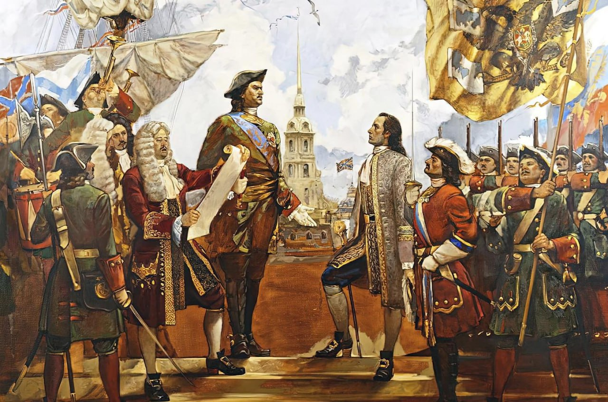

История России и мира
Сегодня в истории — 12 декабря
Мировые события:
• 627 — Битва при Ниневии: византийский император Ираклий наносит поражение войскам Сасанидов.
• 1098 — Крестоносцы захватывают город Маарра в Сирии.
• 1787 — Пенсильвания становится вторым штатом, ратифицировавшим Конституцию США.
• 1862 — В ходе Гражданской войны в США тонет броненосец USS Cairo — первое судно, потопленное управляемой миной.
• 1911 — Столица Британской Индии переносится из Калькутты в Дели.
• 1997 — Открыт для подписания Киотский протокол о сокращении выбросов парниковых газов.
События в России:
• 1917 — В Петрограде большевики создают Народный комиссариат торговли и промышленности.
• 1993 — Вступает в силу Конституция Российской Федерации.
• 2000 — В России учреждён День Конституции как государственный праздник (позже статус изменён).
Праздники и памятные даты:
• День Конституции Российской Федерации.
• Международный день нейтрализации.
• День независимости Кении.
• День памяти святого Спиридона Тримифунтского.
Родились:
• 1821 — Гюстав Флобер, французский писатель.
• 1863 — Эдвард Мунк, норвежский художник.
• 1915 — Фрэнк Синатра, американский певец и актёр.
• 1927 — Роберт Нойс, американский инженер.
• 1946 — Эмма Томпсон, британская актриса и сценарист.
12.12.2025 09:00
История России и мира
Сегодня в истории — 11 декабря
Мировые события:
• 220 — Последний император династии Хань отрекается от престола, завершая эпоху Хань.
• 361 — Юлиан вступает в Константинополь как единоличный римский император.
• 1282 — В битве при Оревин-Бридж погибает Лливелин ап Грифид, последний независимый принц Уэльса.
• 1936 — Король Великобритании Эдуард VIII объявляет об отречении от престола.
• 1941 — Германия и Италия объявляют войну США; США отвечают взаимно.
• 1946 — В Нью‑Йорке открывается первая сессия Генеральной Ассамблеи ООН.
• 1997 — Открыт для подписания Киотский протокол.
События в России:
• 1917 — В Петрограде большевики создают Народный комиссариат государственного контроля.
• 1991 — Верховный Совет РСФСР ратифицирует Беловежские соглашения.
• 1993 — Утверждён государственный герб Российской Федерации.
Праздники и памятные даты:
• Международный день гор.
• Международный день танго.
• День Конституции Узбекистана.
• День памяти мученика Иринарха (православный календарь).
Родились:
• 1803 — Гектор Берлиоз, французский композитор.
• 1843 — Роберт Кох, немецкий микробиолог, Нобелевский лауреат.
• 1918 — Александр Солженицын, русский писатель.
• 1931 — Рита Морено, американская актриса.
• 1944 — Бренда Ли, американская певица.
11.12.2025 09:35
История России и мира
Сегодня в истории — 10 декабря
Мировые события:
• 1520 — Мартин Лютер публично сжигает буллу папы Льва X, начав открытую конфронтацию с католической церковью.
• 1817 — В Миссисипи провозглашено образование штата США.
• 1896 — В Стокгольме впервые вручена Нобелевская премия.
• 1901 — В Стокгольме состоялась первая церемония вручения Нобелевских премий.
• 1948 — Генеральная Ассамблея ООН принимает Всеобщую декларацию прав человека.
• 1983 — В Японии выходит первая версия игры *Mario Bros.* от Nintendo.
• 1994 — В Норвегии подписано соглашение о вступлении страны в Европейскую экономическую зону.
• 2017 — В Ираке официально объявлено о победе над террористической организацией ИГИЛ.
События в России:
• 1905 — В Москве начинается вооружённое восстание рабочих.
• 1917 — В Петрограде большевики создают Народный комиссариат путей сообщения.
• 1941 — В ходе Великой Отечественной войны Красная армия ведёт контрнаступление под Москвой.
• 1993 — В России проходит референдум по новой Конституции (вступила в силу 12 декабря).
Праздники и памятные даты:
• День прав человека (ООН)
• День Конституции в Таиланде
• День основания Нобелевской премии
• День памяти святого Романа (православный календарь)
Родились:
• 1830 — Эмили Дикинсон, американская поэтесса.
• 1851 — Мелвилл Дьюи, американский библиотекарь, автор десятичной классификации.
• 1901 — Нобелевская премия впервые вручена лауреатам (историческая дата).
• 1914 — Дороти Лэмур, американская актриса.
• 1923 — Хорхе Семпрун, испанский писатель.
• 1941 — Фадил Ходжа, албанский политик.
• 1957 — Майкл Кларк Дункан, американский актёр.
10.12.2025 09:12
История России и мира
Сегодня в истории — 9 декабря
Мировые события:
• 1594 — В Шотландии коронован король Джеймс VI (будущий король Англии Джеймс I).
• 1824 — Битва при Аякучо: войска Симона Боливара одерживают победу над испанцами, завершая войну за независимость Перу.
• 1905 — Во Франции принят закон о разделении церкви и государства.
• 1917 — Первая мировая война: британские войска занимают Иерусалим.
• 1946 — В Нью-Йорке открывается первая сессия Генеральной Ассамблеи ООН.
• 1961 — Танзания провозглашает независимость от Великобритании.
• 1990 — В Литве принят закон о восстановлении многопартийной системы.
• 2019 — В Париже проходит саммит «нормандской четвёрки» по урегулированию конфликта в Донбассе.
События в России:
• 1742 — В Москве основан Московский университет (будущий МГУ).
• 1917 — В Петрограде большевики создают Народный комиссариат земледелия.
• 1941 — В ходе Великой Отечественной войны Красная армия ведёт контрнаступление под Москвой.
• 1992 — В России учреждён День героев Отечества.
Праздники и памятные даты:
• Международный день борьбы с коррупцией (ООН)
• Международный день памяти жертв геноцида (ООН)
• День героев Отечества в России
• День независимости Танзании
Родились:
• 1608 — Джон Мильтон, английский поэт («Потерянный рай»).
• 1889 — Ханс Кристиан Грам, датский бактериолог, разработавший метод окрашивания бактерий.
• 1906 — Грейс Хоппер, американский учёный, один из создателей языков программирования.
• 1916 — Кирк Дуглас, американский актёр.
• 1934 — Джуди Денч, британская актриса.
• 1953 — Джон Малкович, американский актёр.
09.12.2025 09:00
История России и мира
Сегодня в истории — 8 декабря
Мировые события:
• 1854 — Папа Пий IX провозглашает догмат о непорочном зачатии Девы Марии.
• 1863 — Основан Международный Красный Крест.
• 1941 — США и Великобритания объявляют войну Японии после атаки на Перл-Харбор.
• 1941 — Начало войны на Тихом океане (Вторая мировая).
• 1980 — В Нью-Йорке убит Джон Леннон, участник группы «The Beatles».
• 1991 — В Беловежской пуще подписано соглашение о роспуске СССР и создании СНГ.
• 1993 — В США принят закон о создании НАФТА (Североамериканское соглашение о свободной торговле).
• 2010 — В Лиссабоне вступает в силу договор о реформе НАТО.
События в России:
• 1917 — В Петрограде большевики создают Народный комиссариат просвещения.
• 1941 — В ходе Великой Отечественной войны Красная армия ведёт контрнаступление под Москвой.
• 1991 — Россия подписывает Беловежское соглашение о прекращении существования СССР.
• 1993 — В России проходит референдум по новой Конституции (вступила в силу 12 декабря).
Праздники и памятные даты:
• День Конституции в Румынии
• День воинской славы России — начало контрнаступления под Москвой (1941)
• Праздник Непорочного зачатия Девы Марии (католический календарь)
• День основания Международного Красного Креста
Родились:
• 65 до н.э. — Гораций, римский поэт.
• 1765 — Эли Уитни, американский изобретатель хлопкоочистительной машины.
• 1864 — Жан Сибелиус, финский композитор.
• 1886 — Диего Ривера, мексиканский художник.
• 1925 — Сэмми Дэвис-младший, американский певец и актёр.
• 1933 — Флип Уилсон, американский комик.
• 1943 — Джим Моррисон, американский музыкант, лидер группы «The Doors».
08.12.2025 09:00
История России и мира
Сегодня в истории — 7 декабря
Мировые события:
• 43 до н.э. — В Риме убит Цицерон, философ и политический деятель.
• 1787 — Делавэр становится первым штатом, ратифицировавшим Конституцию США.
• 1842 — В Вене подписан договор между Австрией и Пруссией о таможенном союзе.
• 1917 — Первая мировая война: США объявляют войну Австро-Венгрии.
• 1941 — Японская атака на Перл-Харбор, США вступают во Вторую мировую войну.
• 1972 — Запуск «Аполлона-17» — последней миссии NASA на Луну.
• 1988 — В Армении происходит разрушительное Спитакское землетрясение.
• 1995 — В США впервые проведена трансляция космического полёта в интернете.
События в России:
• 1917 — В Петрограде большевики создают Народный комиссариат труда.
• 1941 — В ходе Великой Отечественной войны Красная армия развивает контрнаступление под Москвой.
• 1988 — Советский Союз объявляет трёхдневный траур по жертвам Спитакского землетрясения.
• 1991 — В Москве проходит заседание Верховного Совета РСФСР по вопросам распада СССР.
Праздники и памятные даты:
• День воинской славы России — начало контрнаступления под Москвой (1941)
• День памяти святой Екатерины (православный календарь)
• День основания штата Делавэр (США)
• Национальный день гражданской авиации в Индии
Родились:
• 521 — Святой Колумба, ирландский монах и миссионер.
• 1863 — Пьетро Масканьи, итальянский композитор.
• 1873 — Вильям Л. Ширер, американский историк.
• 1915 — Эли Уоллак, американский актёр.
• 1928 — Ноам Хомский, американский философ и лингвист.
• 1947 — Джонатан Айв, британский дизайнер.
• 1956 — Ларри Берд, американский баскетболист.
07.12.2025 09:00
История России и мира
Сегодня в истории — 6 декабря
Мировые события:
• 1534 — Основан город Кито (ныне столица Эквадора).
• 1768 — В Лондоне основано Королевское общество искусств.
• 1865 — В США принята 13-я поправка к Конституции, отменяющая рабство.
• 1877 — Томас Эдисон делает первую звукозапись (песня «Mary Had a Little Lamb»).
• 1917 — В Канаде происходит катастрофический взрыв в гавани Галифакса, погибают тысячи людей.
• 1921 — Подписан Англо-ирландский договор, положивший начало созданию Ирландского свободного государства.
• 1941 — Вторая мировая война: Великобритания объявляет войну Финляндии, Венгрии и Румынии.
• 1992 — В Индии разрушена мечеть Бабри в Айодхье, вызвавшая массовые беспорядки.
События в России:
• 1917 — В Петрограде большевики создают Народный комиссариат почт и телеграфов.
• 1931 — В Москве взорван храм Христа Спасителя.
• 1941 — В ходе Великой Отечественной войны Красная армия развивает контрнаступление под Москвой.
• 1993 — В России официально учреждён День Конституции (12 декабря).
Праздники и памятные даты:
• День Конституции Испании
• День Вооружённых сил Украины
• День памяти святителя Николая Чудотворца (православный календарь)
• День независимости Финляндии
Родились:
• 1421 — Генри VI, король Англии.
• 1778 — Жозеф Луи Гей-Люссак, французский химик и физик.
• 1868 — Фриц Ланге, немецкий хирург.
• 1875 — Гай Кёртис, американский юрист.
• 1898 — Гуннар Мюрдаль, шведский экономист, лауреат Нобелевской премии.
• 1900 — Агнес Мурхед, американская актриса.
• 1948 — Ким Дэрби, американская актриса.
• 1962 — Бен Уотсон, британский футболист.
06.12.2025 09:00
История России и мира
Сегодня в истории — 5 декабря
Мировые события:
• 1492 — Христофор Колумб открывает остров Эспаньола (ныне Гаити и Доминиканская Республика).
• 1848 — Президент США Джеймс Полк официально объявляет о находке золота в Калифорнии, начав «золотую лихорадку».
• 1933 — В США отменён «сухой закон» (21-я поправка к Конституции).
• 1945 — Исчезновение эскадрильи «Flight 19» во время учений у Бермудского треугольника.
• 1952 — В Лондоне начинается Великий смог, приведший к гибели тысяч людей.
• 1994 — В Японии выходит первая игровая приставка Sony PlayStation.
События в России:
• 1908 — В Москве открыт первый в России планетарий.
• 1936 — Принята новая Конституция СССР («Сталинская Конституция»).
• 1941 — Начало контрнаступления Красной армии под Москвой — День воинской славы России.
• 1957 — В СССР спущен на воду первый в мире атомный ледокол «Ленин».
Праздники и памятные даты:
• День воинской славы России — начало контрнаступления под Москвой (1941)
• Международный день добровольцев (ООН)
• День основания PlayStation (Япония, 1994)
Родились:
• 1839 — Джордж Армстронг Кастер, американский военный.
• 1868 — Арнольд Зоммерфельд, немецкий физик-теоретик.
• 1901 — Витторио де Сика, итальянский кинорежиссёр.
• 1932 — Литон Стрэтчи, английский писатель.
• 1932 — Фуад Шехаб, президент Ливана.
• 1932 — Франк Борман, американский астронавт.
• 1952 — Джим Мессина, американский музыкант.
05.12.2025 09:00
История России и мира
Сегодня в истории — 4 декабря
Мировые события:
• 771 — Карл Великий становится единоличным правителем Франкского государства.
• 1791 — В Лондоне выходит первый номер газеты «The Observer» — старейшего воскресного издания в мире.
• 1872 — В Атлантике найден покинутый экипажем корабль «Мария Целеста» — одна из самых загадочных морских историй.
• 1918 — Президент США Вудро Вильсон отправляется в Европу для участия в мирных переговорах после Первой мировой войны.
• 1943 — Вторая мировая война: в Тегеране завершается конференция лидеров антигитлеровской коалиции (Сталин, Рузвельт, Черчилль).
• 1954 — В США состоялась первая телетрансляция заседания Сената.
• 1971 — В Нью-Йорке открывается концертный зал «Карнеги-холл» после реставрации.
• 1991 — В Нью-Йорке основана организация «International Federation of Journalists».
События в России:
• 1783 — В Санкт-Петербурге основан Государственный Эрмитаж.
• 1917 — В Петрограде большевики создают Народный комиссариат юстиции.
• 1934 — В Москве проходит траурная церемония прощания с Сергеем Кировым.
• 1941 — В ходе Великой Отечественной войны Красная армия начинает контрнаступление под Москвой.
• 1993 — В России принята новая Конституция (референдум 12 декабря, вступление в силу подготовлено).
Праздники и памятные даты:
• Введение во храм Пресвятой Богородицы (православный календарь)
• День информатики в России (основан в 1948 году — регистрация первой ЭВМ)
• День военно-морского флота Индии
• День независимости в Центральноафриканской Республике
Родились:
• 1795 — Томас Карлейль, шотландский писатель и философ.
• 1866 — Василий Кандинский, русский художник, один из основателей абстракционизма.
• 1875 — Райнер Мария Рильке, австрийский поэт.
• 1892 — Франциско Франко, испанский диктатор.
• 1932 — Борис Штоколов, советский оперный певец.
• 1964 — Мариса Томей, американская актриса.
04.12.2025 09:00
История России и мира
Сегодня в истории — 3 декабря
Мировые события:
• 1775 — Во время Американской революции впервые поднят флаг «Гранд Юнион» — предшественник современного флага США.
• 1818 — Иллинойс становится 21-м штатом США.
• 1912 — В Греции король Константин I вступает на престол.
• 1967 — В Кейптауне проведена первая в мире успешная пересадка сердца (хирург Кристиан Барнард).
• 1973 — В США представлен первый персональный компьютер «Altair».
• 1984 — В Бхопале (Индия) произошла крупнейшая в истории техногенная катастрофа на химическом заводе Union Carbide.
• 1992 — В США отправлено первое SMS-сообщение («Merry Christmas»).
• 2012 — В Египте проходят массовые протесты против президента Мурси.
События в России:
• 1905 — В Москве начинается вооружённое восстание рабочих.
• 1917 — В Петрограде большевики создают Народный комиссариат продовольствия.
• 1934 — В СССР начинается массовая волна репрессий после убийства Кирова.
• 1941 — В ходе Великой Отечественной войны Красная армия переходит в контрнаступление под Москвой.
• 1994 — В России учреждён День юриста.
Праздники и памятные даты:
• Международный день инвалидов (ООН)
• День юриста в России
• День памяти святого Прокопия (православный календарь)
• День независимости в Катаре (историческая дата)
Родились:
• 1596 — Николай I Радзивилл, польский государственный деятель.
• 1857 — Джозеф Конрад, английский писатель польского происхождения.
• 1882 — Николай Вавилов, русский учёный-генетик.
• 1894 — Алеко Шанья, венгерский композитор.
• 1930 — Жан-Люк Годар, французский кинорежиссёр.
• 1948 — Оззи Осборн, британский рок-музыкант.
03.12.2025 09:00
История России и мира
Сегодня в истории — 2 декабря
Мировые события:
• 1804 — В Париже Наполеон Бонапарт коронован императором Франции в соборе Парижской Богоматери.
• 1823 — Президент США Джеймс Монро провозглашает «доктрину Монро» — принцип невмешательства Европы в дела Америки.
• 1848 — Франц Иосиф I становится императором Австрии.
• 1852 — Луи-Наполеон Бонапарт провозглашает себя императором Франции под именем Наполеон III.
• 1942 — В Чикаго проведена первая в мире управляемая ядерная реакция (эксперимент Энрико Ферми).
• 1971 — В ОАЭ провозглашено образование Объединённых Арабских Эмиратов.
• 1982 — В США проводится первая операция по пересадке искусственного сердца.
• 1988 — В Армении происходит разрушительное Спитакское землетрясение (25 тыс. погибших).
События в России:
• 1721 — Пётр I принимает титул императора Всероссийского.
• 1917 — В Петрограде большевики создают Народный комиссариат финансов.
• 1939 — В ходе советско-финской войны Красная армия ведёт наступательные действия.
• 1942 — В ходе Великой Отечественной войны советские войска продолжают контрнаступление под Сталинградом.
• 1993 — В России вступает в силу новая Конституция после референдума.
Праздники и памятные даты:
• Международный день борьбы за отмену рабства (ООН)
• День основания ОАЭ
• День независимости Лаоса
• День памяти святого Варфоломея (православный календарь)
• День Конституции России (историческая дата)
Родились:
• 1814 — Карл Фридрих Целльнер, немецкий физик.
• 1825 — Педро II, император Бразилии.
• 1859 — Жорж Сёра, французский художник.
• 1906 — Михаил Шолохов, русский писатель, лауреат Нобелевской премии.
• 1946 — Джанни Версаче, итальянский модельер.
• 1963 — Хулио Франко, доминиканский бейсболист.
02.12.2025 09:00
История России и мира
Сегодня в истории — 1 декабря
Мировые события:
• 1640 — Португалия восстанавливает независимость от Испании, начинается война за независимость.
• 1822 — Педру I провозглашён первым императором независимой Бразилии.
• 1918 — В Румынии провозглашено объединение Трансильвании с королевством.
• 1919 — Основана Лига независимости Вьетнама.
• 1955 — В США арестована Роза Паркс за отказ уступить место в автобусе — начало движения за гражданские права.
• 1973 — В Австралии принят закон о создании национальной системы здравоохранения.
• 1990 — В Лондоне подписано соглашение о создании Европейского банка реконструкции и развития.
• 2009 — В Лиссабоне вступает в силу Лиссабонский договор ЕС.
События в России:
• 1741 — Елизавета Петровна становится императрицей России после дворцового переворота.
• 1917 — В Петрограде большевики создают Народный комиссариат труда.
• 1934 — В Ленинграде убит Сергей Киров, один из лидеров большевиков — событие, ставшее поводом для массовых репрессий.
• 1941 — В ходе Великой Отечественной войны советские войска ведут ожесточённые бои под Москвой.
• 1991 — В Минске подписано соглашение о создании СНГ (Белоруссия, Россия, Украина).
Праздники и памятные даты:
• Всемирный день борьбы со СПИДом (ООН)
• День независимости Португалии
• День объединения Румынии
• День памяти святого Платона (православный календарь)
• День воинской славы России — начало контрнаступления Красной армии под Москвой (1941)
Родились:
• 1761 — Мария Тереза Шарлотта, дочь Людовика XVI.
• 1866 — Георгий Плеханов, русский революционер и философ.
• 1896 — Морис Равель, французский композитор.
• 1935 — Вуди Аллен, американский режиссёр и актёр.
• 1940 — Ричард Прайор, американский комик.
• 1966 — Андрей Макаревич, советский и российский музыкант.
01.12.2025 09:00
История России и мира
Сегодня в истории — 30 ноября
Мировые события:
• 1782 — В Париже подписано предварительное мирное соглашение между Великобританией и США, завершившее Войну за независимость.
• 1872 — В Лондоне состоялся первый официальный футбольный матч сборных: Англия — Шотландия (0:0).
• 1939 — Начало советско-финской войны («Зимняя война»).
• 1954 — В США зафиксировано первое падение метеорита на человека (Сильвия Мастон в Алабаме).
• 1966 — Барбадос получает независимость от Великобритании.
• 1982 — В Испании социалисты во главе с Фелипе Гонсалесом приходят к власти.
• 1995 — В Дейтоне подписано мирное соглашение, завершившее войну в Боснии.
События в России:
• 1853 — В ходе Крымской войны русские войска одерживают победу над турками в Синопском сражении.
• 1917 — В Петрограде большевики создают Народный комиссариат по делам национальностей.
• 1939 — СССР начинает военные действия против Финляндии (Зимняя война).
• 1941 — В ходе Великой Отечественной войны советские войска ведут ожесточённые бои под Москвой.
• 1994 — В России учреждён День памяти жертв политических репрессий.
Праздники и памятные даты:
• День памяти святого апостола Андрея Первозванного (православный календарь)
• День независимости Барбадоса
• День памяти жертв политических репрессий в России
• День защиты информации (международный)
· День матери в России(последнее воскресенье ноября)
Родились:
• 1667 — Джонатан Свифт, английский писатель («Путешествия Гулливера»).
• 1835 — Марк Твен (Сэмюэл Клеменс), американский писатель.
• 1874 — Уинстон Черчилль, британский премьер-министр, лауреат Нобелевской премии по литературе.
• 1900 — Эдвард Смит, британский историк.
• 1937 — Ридли Скотт, британский кинорежиссёр.
• 1955 — Билли Айдол, британский рок-музыкант.
30.11.2025 09:00
История России и мира
Сегодня в истории — 29 ноября
Мировые события:
• 1877 — Томас Эдисон демонстрирует фонограф — первый аппарат для записи и воспроизведения звука.
• 1899 — Основан футбольный клуб «Барселона» в Испании.
• 1929 — В США впервые проведена радиотрансляция авиашоу.
• 1947 — Генеральная Ассамблея ООН принимает резолюцию о разделе Палестины и создании еврейского государства.
• 1963 — В Лондоне выходит первый альбом группы «The Beatles» — *With the Beatles*.
• 1972 — В Югославии подписано соглашение о создании федерации республик.
• 2001 — В Афганистане начинается операция международных сил против «Талибана».
События в России:
• 1825 — В Санкт-Петербурге открыт первый в России театр оперы и балета.
• 1917 — В Петрограде большевики создают Народный комиссариат иностранных дел.
• 1941 — В ходе Великой Отечественной войны советские войска ведут ожесточённые бои под Москвой.
• 1942 — Красная армия развивает успех операции «Уран» под Сталинградом.
Праздники и памятные даты:
• Международный день солидарности с палестинским народом (ООН)
• День независимости в Албании (историческая дата)
• День памяти апостола Матфея (православный календарь)
Родились:
• 1803 — Кристиан Доплер, австрийский физик, открывший эффект Доплера.
• 1832 — Луиза Мэй Олкотт, американская писательница («Маленькие женщины»).
• 1874 — Антон Рубинштейн, русский композитор и пианист.
• 1898 — Клайв Льюис, британский писатель («Хроники Нарнии»).
• 1932 — Жак Ширак, французский политик, президент Франции.
• 1952 — Джефф Фаэйи, американский актёр.
29.11.2025 09:00
История России и мира
Сегодня в истории — 28 ноября
Мировые события:
• 1520 — Фернан Магеллан проходит пролив, названный позже его именем, и выходит в Тихий океан.
• 1814 — В Лондоне открывается театр «Королевский оперный дом» (Ковент-Гарден).
• 1895 — В США основана автомобильная компания «Duryea Motor Wagon Company» — первая в стране.
• 1919 — В Латвии провозглашена независимость.
• 1943 — В Тегеране открывается конференция лидеров антигитлеровской коалиции (Сталин, Рузвельт, Черчилль).
• 1960 — В Мавритании провозглашена независимость от Франции.
• 1979 — Совет безопасности ООН принимает резолюцию о санкциях против Южной Родезии.
• 1994 — В Норвегии подписано соглашение о вступлении страны в Европейскую экономическую зону.
События в России:
• 1820 — В Санкт-Петербурге открыт первый в России музей минералогии.
• 1917 — В Петрограде большевики создают Народный комиссариат путей сообщения.
• 1941 — В ходе Великой Отечественной войны советские войска ведут ожесточённые бои под Москвой.
• 1943 — Иосиф Сталин принимает участие в Тегеранской конференции вместе с лидерами союзников.
• 1991 — В Москве проходит съезд народных депутатов РСФСР, обсуждающий распад СССР.
Праздники и памятные даты:
• День независимости в Албании
• День независимости в Мавритании
• День памяти апостола Филиппа (православный календарь)
Родились:
• 1632 — Жан-Батист Люлли, французский композитор.
• 1757 — Уильям Блейк, английский поэт и художник.
• 1820 — Фридрих Энгельс, немецкий философ, соратник Карла Маркса.
• 1908 — Клод Леви-Стросс, французский этнограф и антрополог.
• 1929 — Берри Горди, американский продюсер, основатель студии Motown.
• 1944 — Рита Маэстро, итальянская актриса.
• 1962 — Джон Гэлт, британский писатель.
28.11.2025 09:00
История России и мира
Сегодня в истории — 27 ноября
Мировые события:
• 1095 — Папа Урбан II призывает к Первому крестовому походу на соборе в Клермоне.
• 1701 — В Англии принят Акт о престолонаследии, закрепивший протестантскую династию.
• 1839 — В Бостоне открыта первая школа для слепых детей.
• 1895 — Альфред Нобель подписывает завещание, учреждающее Нобелевскую премию.
• 1924 — В Нью-Йорке впервые проведён парад в честь Дня благодарения (Macy’s Thanksgiving Parade).
• 1942 — Вторая мировая война: британские войска побеждают итальянцев в битве при Эль-Аламейне.
• 1971 — В Нью-Йорке состоялась премьера мюзикла «Иисус Христос — суперзвезда».
• 2005 — В Париже подписан договор о создании крупнейшего в мире термоядерного реактора ITER.
События в России:
• 1801 — В Санкт-Петербурге открыт первый в России университет — Санкт-Петербургский государственный университет.
• 1917 — В Петрограде большевики создают Народный комиссариат по делам национальностей.
• 1941 — В ходе Великой Отечественной войны советские войска ведут ожесточённые бои под Москвой.
• 1942 — Красная армия развивает успех операции «Уран» под Сталинградом.
• 1991 — В Москве проходит первый съезд народных депутатов РСФСР.
Праздники и памятные даты:
• День благодарения в США (переносимый праздник, четвёртый четверг ноября)
• День независимости в Панаме
• День памяти святого Иоанна Златоуста (православный календарь)
Родились:
• 1701 — Андерс Цельсий, шведский астроном и физик, создатель температурной шкалы.
• 1867 — Чарльз Шульц, американский художник, автор комиксов «Peanuts».
• 1909 — Джеймс Эйджи, американский писатель и сценарист.
• 1940 — Брюс Ли, китайско-американский актёр и мастер боевых искусств.
• 1942 — Джими Хендрикс, американский музыкант.
• 1955 — Билл Найи, британский актёр.
27.11.2025 09:00
История России и мира
Сегодня в истории — 26 ноября
Мировые события:
• 1778 — В Лондоне открыт Королевский театр «Хеймаркет».
• 1863 — В США президент Авраам Линкольн провозглашает День благодарения национальным праздником.
• 1922 — В Великобритании впервые проведена радиотрансляция футбольного матча.
• 1941 — Вторая мировая война: японский флот выходит из базы для атаки на Перл-Харбор.
• 1948 — В Токио завершён Международный военный трибунал для Дальнего Востока (суд над японскими военными преступниками).
• 1965 — Франция запускает первый искусственный спутник «Астерикс».
• 2003 — В Грузии президент Эдуард Шеварднадзе уходит в отставку после «Революции роз».
События в России:
• 1826 — В Санкт-Петербурге открыт первый в России музей — Румянцевский.
• 1917 — В Петрограде большевики создают Народный комиссариат юстиции.
• 1941 — В ходе Великой Отечественной войны советские войска ведут ожесточённые бои под Москвой.
• 1942 — Красная армия развивает успех операции «Уран» под Сталинградом.
• 2010 — В Москве открыта новая линия метрополитена — Люблинско-Дмитровская.
Праздники и памятные даты:
• Всемирный день информации
• Всемирный день борьбы против употребления пестицидов
• День Конституции в Монголии
• День независимости в Восточном Тиморе
• День памяти святителя Иоанна Златоуста (православный календарь)
Родились:
• 1607 — Джон Гарвард, английский богослов, основатель Гарвардского университета.
• 1894 — Норберт Винер, американский математик, основатель кибернетики.
• 1895 — Билл Уилсон, американский общественный деятель, основатель движения «Анонимные алкоголики».
• 1922 — Чарльз Шульц, американский художник, автор комиксов «Peanuts».
• 1938 — Тина Тёрнер, американская певица.
• 1942 — Ольга Аросева, советская и российская актриса.
26.11.2025 09:00
История России и мира
Сегодня в истории — 25 ноября
Мировые события:
• 1491 — В Испании заключён договор в Гранаде, завершивший Реконкисту.
• 1867 — Альфред Нобель впервые демонстрирует динамит.
• 1926 — В Германии основана футбольная команда «Айнтрахт Франкфурт».
• 1947 — В Нью-Йорке открыта первая регулярная линия авиаперевозок через Атлантику.
• 1952 — В Лондоне открыта первая секция метро «Виктория».
• 1960 — В Доминиканской Республике убиты сестры Мирабаль — символ борьбы против диктатуры Трухильо.
• 1973 — В Афинах подавлено студенческое восстание против военной диктатуры.
• 2005 — В Париже подписан договор о создании крупнейшего в мире термоядерного реактора ITER.
События в России:
• 1741 — Елизавета Петровна становится императрицей России после дворцового переворота.
• 1917 — В Петрограде большевики создают Народный комиссариат здравоохранения.
• 1942 — В ходе Великой Отечественной войны Красная армия развивает успех операции «Уран» под Сталинградом.
• 2009 — В Москве открыт новый терминал аэропорта «Домодедово».
Праздники и памятные даты:
• Международный день борьбы за ликвидацию насилия в отношении женщин (ООН)
• День независимости в Суринаме
• День памяти святого Иоанна Милостивого (православный календарь)
Родились:
• 1844 — Карл Бенц, немецкий инженер, создатель первого автомобиля.
• 1881 — Пауль Клее, немецкий художник.
• 1915 — Августо Пиночет, чилийский диктатор.
• 1940 — Перси Следж, американский певец.
• 1960 — Джон Кеннеди-младший, американский юрист и журналист.
• 1966 — Стейси Латтисоу, американская певица.
25.11.2025 09:00
История России и мира
Сегодня в истории — 24 ноября
Мировые события:
• 1642 — Абель Тасман открывает остров Тасмания.
• 1859 — В Лондоне опубликована книга Чарльза Дарвина «Происхождение видов».
• 1874 — В Нью-Йорке основана Национальная организация фармацевтов.
• 1929 — В США впервые проведено авиашоу с участием реактивных самолётов.
• 1963 — В Далласе убит Ли Харви Освальд, обвиняемый в убийстве президента Джона Кеннеди.
• 1974 — В Эфиопии обнаружены останки австралопитека «Люси», ставшие важнейшей находкой в антропологии.
• 1991 — В Великобритании прекращает существование авиакомпания Pan Am.
• 2012 — В Египте начинается массовое протестное движение против президента Мухаммеда Мурси.
События в России:
• 1761 — В Санкт-Петербурге открыта Академия художеств.
• 1917 — В Петрограде большевики создают Народный комиссариат труда.
• 1941 — В ходе Великой Отечественной войны советские войска продолжают оборону Москвы.
• 1942 — В СССР учреждён орден Александра Невского.
• 1964 — В Москве открыт памятник Юрию Долгорукому.
Праздники и памятные даты:
• День эволюции (в память публикации книги Дарвина)
• День благодарения в США (переносимый праздник, четвёртый четверг ноября)
• День памяти святого Климента (православный календарь)
• День открытия Тасмании
Родились:
• 1712 — Чарльз Луи Монтескьё, французский философ и правовед.
• 1784 — Захарий Тейлор, 12-й президент США.
• 1864 — Анри Тулуз-Лотрек, французский художник.
• 1888 — Андрей Платонов, русский писатель.
• 1941 — Артур Хейли, британский писатель.
• 1941 — Пит Бест, британский музыкант, первый барабанщик группы «The Beatles».
• 1990 — Сара Хайленд, американская актриса.
24.11.2025 09:00
История России и мира
Сегодня в истории — 23 ноября
Мировые события:
• 1499 — Швейцарская конфедерация получает независимость от Священной Римской империи.
• 1644 — В Англии парламент запрещает празднование Рождества.
• 1859 — Публикация книги Чарльза Дарвина «Происхождение видов» в Лондоне.
• 1924 — В США впервые транслируется радиоконцерт из Карнеги-холла.
• 1942 — В ходе Второй мировой войны Красная армия завершает окружение 6-й армии Паулюса под Сталинградом.
• 1963 — В Великобритании выходит первый альбом группы «The Beatles» — *With the Beatles*.
• 2003 — В Грузии начинается «Революция роз», приведшая к смене власти.
События в России:
• 1801 — В Санкт-Петербурге учреждён первый в России университет — Санкт-Петербургский государственный университет.
• 1917 — В Петрограде большевики создают Народный комиссариат просвещения.
• 1942 — Завершение окружения немецкой 6-й армии под Сталинградом в ходе операции «Уран» — переломный момент Великой Отечественной войны.
• 1990 — В Москве проходит первый съезд народных депутатов РСФСР.
• 2003 — Россия официально признаёт новые власти Грузии после «Революции роз».
Праздники и памятные даты:
• День матери в России (переносимый праздник, последнее воскресенье ноября)
• День военного морского флота в Перу
• День памяти святого Георгия Победоносца (православный календарь)
• День независимости в Грузии (историческая дата)
Родились:
• 912 — Оттон I Великий, император Священной Римской империи.
• 1804 — Франц Бенедикт Бенедикт, немецкий композитор.
• 1887 — Борис Пастернак, русский писатель, лауреат Нобелевской премии.
• 1890 — Эль Лисицкий, русский художник и архитектор.
• 1936 — Владимир Меньшов, советский и российский кинорежиссёр, лауреат «Оскара».
• 1954 — Брюс Хорнсби, американский музыкант.
23.11.2025 09:00
История России и мира
Сегодня в истории — 22 ноября
Мировые события:
• 1497 — Васко да Гама достигает мыса Доброй Надежды во время первого плавания в Индию.
• 1718 — В бою у побережья Северной Каролины убит знаменитый пират Чёрная Борода (Эдвард Тич).
• 1869 — В Великобритании открыта первая линия велосипедного трамвая.
• 1906 — В Швейцарии открыта Симплонская железнодорожная линия через Альпы.
• 1943 — В Лондоне начинается конференция министров иностранных дел СССР, США и Великобритании (Тегеранская конференция готовится).
• 1963 — В Далласе убит президент США Джон Ф. Кеннеди.
• 1975 — В Испании королём провозглашён Хуан Карлос I после смерти Франко.
• 1990 — Маргарет Тэтчер объявляет об отставке с поста премьер-министра Великобритании.
События в России:
• 1917 — В Петрограде большевики создают Народный комиссариат земледелия.
• 1941 — В ходе Великой Отечественной войны советские войска ведут ожесточённые бои под Москвой.
• 1942 — В СССР учреждён орден Суворова.
• 1960 — В Москве открыт памятник Юрию Долгорукому.
• 1992 — В России учреждён День психолога.
Праздники и памятные даты:
• День психолога в России
• День благодарения в США (переносимый праздник, четвёртый четверг ноября)
• День независимости Ливана (историческая дата)
• День памяти святого Филиппа (православный календарь)
Родились:
• 1819 — Джордж Элиот (Мэри Энн Эванс), английская писательница.
• 1890 — Шарль де Голль, французский государственный деятель.
• 1904 — Артур Хейли, британский писатель.
• 1924 — Джеральдин Пейдж, американская актриса.
• 1938 — Ален Корно, французский кинорежиссёр.
• 1943 — Билли Джин Кинг, американская теннисистка.
22.11.2025 09:00
История России и мира
Сегодня в истории — 21 ноября
Мировые события:
• 1783 — В Париже состоялся первый полёт человека на воздушном шаре братьев Монгольфье.
• 1877 — Томас Эдисон объявил о своём изобретении фонографа.
• 1920 — В Ирландии произошла «Кровавая воскресная» бойня в Дублине во время войны за независимость.
• 1942 — В ходе Второй мировой войны Красная армия продолжает операцию «Уран» под Сталинградом, окружая немецкие войска.
• 1969 — В США подписан договор о запрете биологического оружия.
• 1990 — В Париже подписана Хартия для новой Европы, закрепившая окончание холодной войны.
• 2013 — В Киеве начинаются акции Евромайдана после отказа правительства подписать соглашение об ассоциации с ЕС.
События в России:
• 1806 — В Санкт-Петербурге открыт первый в России институт инженеров путей сообщения.
• 1917 — В Петрограде большевики создают Народный комиссариат финансов.
• 1942 — В ходе Великой Отечественной войны советские войска развивают успех операции «Уран» под Сталинградом.
• 1995 — В России учреждён День работника налоговых органов.
• 2001 — В Москве проходит первый Всероссийский съезд нотариусов.
Праздники и памятные даты:
• Всемирный день телевидения (ООН)
• День работника налоговых органов России
• День памяти святого Михаила (православный календарь)
• День независимости Ливана
• День начала Евромайдана (Украина, 2013)
Родились:
• 1694 — Вольтер (Франсуа-Мари Аруэ), французский философ и писатель.
• 1898 — Рене Магритт, бельгийский художник-сюрреалист.
• 1902 — Исидор Раби, американский физик, лауреат Нобелевской премии.
• 1924 — Михаил Ульянов, советский актёр театра и кино.
• 1944 — Харальд V, король Норвегии.
• 1945 — Голди Хоун, американская актриса.
21.11.2025 09:00
История России и мира
Сегодня в истории — 20 ноября
Мировые события:
• 284 — Диоклетиан провозглашён римским императором.
• 1815 — Подписан Парижский мирный договор, завершивший Наполеоновские войны.
• 1910 — В Мексике начинается революция против режима Порфирио Диаса.
• 1923 — В Германии прекращается гиперинфляция после введения рентной марки.
• 1945 — В Нюрнберге открывается Международный военный трибунал над главными нацистскими преступниками.
• 1959 — В ООН принят Декларация прав ребёнка.
• 1975 — В Испании королём провозглашён Хуан Карлос I после смерти Франко.
• 1989 — В Праге проходит массовая демонстрация, ставшая началом «бархатной революции» в Чехословакии.
• 1998 — В ООН принят Декларация о праве народов на мир.
События в России:
• 1719 — В России учреждена Берг-коллегия для управления горным делом.
• 1917 — В Петрограде большевики создают Народный комиссариат по делам национальностей.
• 1942 — В ходе Великой Отечественной войны продолжается операция «Уран» под Сталинградом.
• 1945 — СССР участвует в Нюрнбергском процессе против нацистских преступников.
• 1989 — В Москве проходят митинги демократических сил, поддерживающих перемены в Восточной Европе.
Праздники и памятные даты:
• Всемирный день ребёнка (ООН)
• День индустриализации Африки
• День памяти жертв трансгендерной ненависти
• День революции в Мексике
• День начала «бархатной революции» в Чехии
• День прав ребёнка в России (историческая дата)
Родились:
• 1750 — Жан Антуан Шапталь, французский химик.
• 1858 — Сельма Лагерлёф, шведская писательница, лауреат Нобелевской премии.
• 1889 — Эдвин Хаббл, американский астроном, открывший расширение Вселенной.
• 1925 — Роберт Кеннеди, американский политик.
• 1942 — Джо Байден, американский политик, президент США (2021–2025).
• 1946 — Юрий Никулин, советский актёр и клоун.
• 1956 — Бо Дерек, американская актриса.
20.11.2025 09:00
История России и мира
Сегодня в истории — 19 ноября
Мировые события:
• 1493 — Христофор Колумб открывает остров Пуэрто-Рико во время своего второго плавания.
• 1703 — Основан Санкт-Петербург — будущая столица Российской империи.
• 1863 — Президент США Авраам Линкольн произносит Геттисбергскую речь во время Гражданской войны.
• 1942 — Начало операции «Уран» — контрнаступления Красной армии под Сталинградом, переломный момент Второй мировой войны.
• 1969 — В Бразилии введено чрезвычайное положение, ограничивающее гражданские свободы.
• 1990 — В Париже подписана Хартия для новой Европы, закрепившая окончание холодной войны.
• 1999 — В Стамбуле подписан договор об ограничении обычных вооружённых сил в Европе.
События в России:
• 1703 — Основание Санкт-Петербурга Петром I.
• 1917 — В Петрограде учреждён Народный комиссариат иностранных дел.
• 1942 — Начало операции «Уран» под Сталинградом: советские войска переходят в контрнаступление, окружая 6-ю армию Паулюса.
• 1960 — В СССР учреждён День ракетных войск и артиллерии.
• 1999 — Россия подписывает договор об ограничении обычных вооружённых сил в Европе.
Праздники и памятные даты:
• День ракетных войск и артиллерии России
• Всемирный день туалета (ООН)
• Международный мужской день
• День освобождения Пуэрто-Рико (историческая дата)
• День памяти святого Павла Исповедника (православный календарь)
Родились:
• 1600 — Карло Дольчи, итальянский художник.
• 1831 — Джеймс Гарфилд, 20-й президент США.
• 1893 — Николай Боголюбов, советский математик и физик.
• 1906 — Алексей Крылов, советский конструктор артиллерийских систем.
• 1933 — Ларри Кинг, американский журналист и телеведущий.
• 1961 — Мег Райан, американская актриса.
19.11.2025 09:00
История России и мира
Сегодня в истории — 18 ноября
Мировые события:
• 1626 — Освящён новый собор Святого Петра в Риме.
• 1803 — Гаити провозглашает независимость от Франции.
• 1901 — В США запатентован первый электрический слуховой аппарат.
• 1928 — В Нью-Йорке состоялась премьера мультфильма «Пароходик Вилли» — дебют Микки Мауса.
• 1940 — Вторая мировая война: Гитлер и Муссолини встречаются во Флоренции для обсуждения стратегии.
• 1963 — В Великобритании впервые выпущен сингл группы «The Beatles» — «I Want to Hold Your Hand».
• 1978 — В Гайане происходит массовое самоубийство членов секты «Храм народов» во главе с Джимом Джонсом (более 900 погибших).
• 1991 — В Хорватии войска Югославии захватывают город Вуковар после трёхмесячной осады.
События в России:
• 1825 — В Санкт-Петербурге открыт первый в России театр оперы и балета.
• 1917 — В Петрограде большевики создают Народный комиссариат юстиции.
• 1941 — В ходе Великой Отечественной войны продолжается Тихвинская наступательная операция Красной армии.
• 1942 — В Москве учреждён орден Александра Невского.
• 1991 — В России учреждён День работников налоговых органов.
Праздники и памятные даты:
• День работников налоговых органов России
• День рождения Деда Мороза в России (по народной традиции)
• День независимости Латвии
• День памяти мучеников Платона и Романа (православный календарь)
• День рождения Микки Мауса (США)
Родились:
• 1786 — Карл Мария фон Вебер, немецкий композитор.
• 1830 — Фридрих Боденштедт, немецкий писатель и переводчик.
• 1901 — Джордж Гэллап, американский социолог, создатель метода опросов общественного мнения.
• 1927 — Михаил Ульянов, советский актёр театра и кино.
• 1939 — Маргарита Терехова, советская и российская актриса.
• 1960 — Ким Уайлд, британская певица.
18.11.2025 09:00
История России и мира
Сегодня в истории — 17 ноября
Мировые события:
• 1558 — Елизавета I становится королевой Англии после смерти своей сестры Марии Тюдор.
• 1869 — В Египте официально открыт Суэцкий канал, соединивший Средиземное и Красное моря.
• 1903 — В США признана независимость Панамы, вскоре начнётся строительство Панамского канала.
• 1913 — В Греции коронован король Константин I.
• 1970 — Советская автоматическая станция «Луна-17» доставляет на поверхность Луны первый луноход.
• 1989 — В Чехословакии начинается «бархатная революция» против коммунистического режима.
• 2000 — В США утверждён первый полёт космического корабля «Союз ТМ-31» к МКС с постоянным экипажем.
События в России:
• 1773 — В ходе Крестьянской войны войска Емельяна Пугачёва осаждают Оренбург.
• 1933 — СССР и США официально устанавливают дипломатические отношения.
• 1941 — В ходе Великой Отечественной войны продолжаются ожесточённые бои под Москвой.
• 1970 — Советский луноход-1 начинает работу на поверхности Луны.
• 1989 — В Москве проходят первые массовые митинги демократических сил.
Праздники и памятные даты:
• Международный день студентов
• Всемирный день философии (ЮНЕСКО)
• День борьбы против курения
• День участкового уполномоченного полиции в России
• День независимости в Чехии и Словакии (историческая дата)
Родились:
• 9 г. до н.э. — Веспасиан, римский император.
• 1717 — Жан Антуан Нолле, французский физик.
• 1751 — Николай Новиков, русский писатель и просветитель.
• 1906 — Софико Чиаурели, грузинская актриса.
• 1925 — Рок Хадсон, американский актёр.
• 1942 — Мартин Скорсезе, американский кинорежиссёр.
17.11.2025 09:00
История России и мира
Сегодня в истории — 16 ноября
Мировые события:
• 1532 — В Перу испанский конкистадор Франсиско Писарро захватывает инка Атауальпу в Кахамарке.
• 1849 — В Санкт-Петербурге арестован Фёдор Достоевский за участие в кружке Петрашевцев.
• 1907 — В Лондоне открывается первая линия автобусов с двигателем внутреннего сгорания.
• 1933 — США официально признают СССР и устанавливают дипломатические отношения.
• 1945 — Основана ЮНЕСКО — Организация Объединённых Наций по вопросам образования, науки и культуры.
• 1965 — Советский космический аппарат «Венера-3» стартует к Венере, став первым аппаратом, достигшим поверхности другой планеты.
• 1988 — В СССР запущен космический корабль «Буран» — первый и единственный полёт советского многоразового орбитального корабля.
События в России:
• 1849 — Арест Фёдора Достоевского и участников кружка Петрашевцев.
• 1933 — СССР и США устанавливают дипломатические отношения.
• 1941 — В ходе Великой Отечественной войны продолжаются ожесточённые бои под Москвой.
• 1988 — Успешный полёт «Бурана» — советского аналога американского «Шаттла».
• 1998 — В России учреждён День памяти жертв ДТП.
Праздники и памятные даты:
• Международный день толерантности (ООН)
• День памяти жертв ДТП в России
• День работников СКБ (судебно-криминалистических бюро) в России
• День основания ЮНЕСКО
• День независимости в Казахстане (историческая дата)
Родились:
• 1717 — Жан Антуан Нолле, французский физик, исследователь электричества.
• 1835 — Эдвард Булвер-Литтон, английский писатель.
• 1868 — Герхарт Гауптман, немецкий писатель, лауреат Нобелевской премии.
• 1896 — Лев Обorin, советский пианист, лауреат первой премии конкурса Шопена.
• 1930 — Чинуа Ачебе, нигерийский писатель.
• 1948 — Олег Янковский, советский и российский актёр театра и кино.
16.11.2025 09:00
История России и мира
Сегодня в истории — 15 ноября
Мировые события:
• 1533 — Франциск I открывает первую государственную лотерею во Франции.
• 1796 — Наполеон Бонапарт одерживает победу над австрийцами в битве при Арколе.
• 1889 — В Бразилии свергнут император Педру II, провозглашена республика.
• 1920 — В Женеве открывается первая Ассамблея Лиги Наций.
• 1926 — В Нью-Йорке впервые проведена радиотрансляция оперы из Метрополитен-опера.
• 1988 — Палестинский национальный совет провозглашает независимость Государства Палестина.
• 2001 — В США начинается первый процесс против террористов «Аль-Каиды» после событий 11 сентября.
События в России:
• 1708 — В ходе Северной войны русские войска берут штурмом крепость Батурин — резиденцию Ивана Мазепы.
• 1933 — СССР и США устанавливают дипломатические отношения.
• 1941 — В ходе Великой Отечественной войны продолжается Тихвинская наступательная операция Красной армии.
• 1989 — В Москве проходит первый митинг демократических сил на Пушкинской площади.
• 1993 — Верховный Совет России принимает закон «О Конституционном Суде РФ».
Праздники и памятные даты:
• День памяти жертв Холокоста в Чехии
• День независимости в Бразилии
• День Конституции в Польше (историческая дата)
• Всемирный день философии (ЮНЕСКО)
• День сбора урожая в Южной Корее
Родились:
• 1738 — Уильям Хершель, английский астроном, открывший планету Уран.
• 1862 — Герберт Уэллс, английский писатель-фантаст.
• 1891 — Эрвин Роммель, немецкий военачальник.
• 1907 — Клаус Манн, немецкий писатель.
• 1930 — Джин Кокто, французский писатель и художник.
• 1951 — Беверли Д’Анджело, американская актриса.
15.11.2025 09:00
История России и мира
Сегодня в истории — 14 ноября
Мировые события:
• 1666 — В Лондоне учреждена Королевская академия наук.
• 1851 — В США опубликована книга Германа Мелвилла «Моби Дик».
• 1889 — Журналистка Нелли Блай отправляется в кругосветное путешествие, чтобы обогнать героя романа Жюля Верна.
• 1922 — В Великобритании впервые проводится радиотрансляция концерта.
• 1969 — Запуск космического корабля «Аполлон-12» — второй пилотируемой экспедиции на Луну.
• 1975 — В Испании принята резолюция о независимости Западной Сахары.
• 1991 — В Камбодже подписано Парижское соглашение о прекращении гражданской войны.
• 2001 — В США начинается военная операция против «Талибана» в Афганистане.
События в России:
• 1718 — В Санкт-Петербурге учреждён Адмиралтейский регламент.
• 1832 — В Москве открыт Малый театр.
• 1917 — В Петрограде большевики создают ВЧК — Всероссийскую чрезвычайную комиссию по борьбе с контрреволюцией.
• 1941 — В ходе Великой Отечественной войны советские войска продолжают Тихвинскую наступательную операцию.
• 1970 — В СССР отмечается День советской милиции.
• 2014 — В России учреждён День социолога.
Праздники и памятные даты:
• Всемирный день качества
• Всемирный день борьбы с диабетом
• День социолога в России
• День рождения принца Чарльза (Великобритания)
• День освобождения в Ливии
• День памяти святого Филиппа (православный календарь)
Родились:
• 1765 — Роберт Фултон, американский инженер, создатель первого парохода.
• 1840 — Клод Моне, французский художник-импрессионист.
• 1866 — Карл Адольф Гьеллеруп, датский писатель, лауреат Нобелевской премии.
• 1907 — Астрид Линдгрен, шведская писательница («Пеппи Длинныйчулок»).
• 1948 — Принц Чарльз, наследник британского престола.
14.11.2025 09:00
История России и мира
Сегодня в истории — 13 ноября
Мировые события:
• 1002 — По приказу короля Этельреда II в Англии устроена резня датчан в южных графствах — начало англо-датского конфликта.
• 1775 — Война за независимость США: патриоты под командованием генерала Монтгомери занимают Монреаль.
• 1927 — Открыт Голландский туннель — первый автомобильный туннель под рекой Гудзон, соединяющий Нью-Джерси и Нью-Йорк.
• 1941 — Немецкая подлодка U-81 торпедирует британский авианосец HMS Ark Royal, который затонет на следующий день.
• 1947 — В СССР завершена разработка автомата Калашникова (АК-47).
• 1956 — Верховный суд США признаёт неконституционными законы Алабамы о сегрегации в автобусах, завершив бойкот в Монтгомери.
События в России:
• 1708 — В ходе Северной войны русские войска штурмом берут резиденцию Ивана Мазепы.
• 1758 — Основан Первый Московский медицинский институт (ныне — Сеченовский университет).
• 1918 — В РСФСР учреждена служба защиты государственной тайны — начало истории шифровальных подразделений.
• 1941 — Войска Красной армии продолжают Тихвинскую наступательную операцию, освобождая стратегически важные районы.
• 2021 — В России учреждён День службы защиты государственной тайны.
Праздники и памятные даты:
• Всемирный день доброты
• Международный день слепых
• День войск радиационной, химической и биологической защиты России
• День службы защиты государственной тайны
• День географических информационных систем (ГИС)
• День памяти 100 тысяч мучеников Тбилиси (Грузия)
Родились:
• 1745 — Валентин Гаюи, французский педагог, основатель школ для незрячих.
• 1850 — Роберт Луис Стивенсон, британский писатель («Остров сокровищ»).
• 1955 — Вупи Голдберг, американская актриса.
• 1967 — Джимми Киммел, американский телеведущий.
13.11.2025 09:00
История России и мира
Сегодня в истории — 12 ноября
Мировые события:
• 1028 — Императрица Зоя Порфирородная выходит замуж за Романа III Аргира, будущего византийского императора.
• 1799 — Александр фон Гумбольдт и Эме Бонплан наблюдают метеорный поток Леониды в Кумане (Венесуэла).
• 1909 — В театре «Ан дер Вин» проходит премьера оперетты «Граф Люксембург» Франца Легара.
• 1920 — Подписан Рапалльский договор между Италией и Югославией, подтверждающий независимость города Фиуме.
• 1942 — Начинается морское сражение у Гуадалканала между США и Японией.
• 1944 — Британские ВВС потопили немецкий линкор «Тирпиц» с помощью бомб «Толбой».
• 1970 — Циклон Бхола обрушился на Восточный Пакистан, погибло более 300 тысяч человек.
• 1982 — Юрий Андропов избран Генеральным секретарём ЦК КПСС после смерти Леонида Брежнева.
События в России:
• 1910 — В Санкт-Петербурге учреждён Русский аэроклуб — первая организация, объединяющая авиалюбителей.
• 1941 — В районе Москвы температура падает до −12 °C, впервые применяются лыжные части Красной армии.
• 1982 — Юрий Андропов официально вступает в должность Генсека ЦК КПСС.
• 1994 — В России учреждён День специалиста по безопасности.
Праздники и памятные даты:
• Всемирный день борьбы с пневмонией
• День виноградарей и виноделов Украины
• Синичкин день в России — экологический праздник
• День памяти святого Иосафата (по новому церковному календарю)
• День специалиста по безопасности в России
• День Конституции Азербайджана
Родились:
• 1840 — Огюст Роден, французский скульптор.
• 1866 — Сунь Ятсен, китайский революционер, основатель Китайской Республики.
• 1929 — Грейс Келли, американская актриса и княгиня Монако.
• 1945 — Нил Янг, канадский музыкант.
12.11.2025 09:00
История России и мира
Сегодня в истории — 11 ноября
Мировые события:
• 1215 — Четвёртый Латеранский собор утверждает догмат о транссубстанциации и обязательность исповеди.
• 1837 — В России открыта первая пассажирская железная дорога между Санкт-Петербургом и Царским Селом.
• 1889 — Штат Вашингтон становится 42-м штатом США.
• 1918 — Германия подписывает Компьенское перемирие, завершив Первую мировую войну.
• 1940 — Битва при Таранто: британский флот наносит удар по итальянским кораблям — первая в истории морская атака с участием авиации.
• 1962 — Национальное собрание Кувейта ратифицирует Конституцию страны.
• 2004 — Умер Ясир Арафат, лидер Палестинской автономии.
События в России:
• 1711 — Родился Степан Крашенинников — первый исследователь Камчатки, автор «Описание земли Камчатки».
• 1821 — В Москве зарегистрировано рождение 23 младенцев — редкий демографический всплеск.
• 1918 — В России отмечается окончание Первой мировой войны, хотя страна вышла из неё ранее.
• 1943 — В СССР учреждён орден Кутузова.
• 2020 — В России стартует акция памяти жертв Первой мировой войны.
Праздники и памятные даты:
• День памяти погибших в Первой мировой войне (Armistice Day)
• День независимости Анголы
• День святого Мартина (католический календарь)
• День младшего читателя
• Международная неделя науки и мира
• Всемирный день сирот
• День холостяка в Китае
Родились:
• 1748 — Карл фон Линне-младший, шведский ботаник.
• 1863 — Поль Синьяк, французский художник-постимпрессионист.
• 1885 — Джордж Паттон, американский генерал.
• 1922 — Курт Воннегут, американский писатель.
• 1974 — Леонардо Ди Каприо, американский актёр.
11.11.2025 09:00
История России и мира
10 ноября 1941 года — Начало Тихвинской наступательной операции
10 ноября 1941 года началась Тихвинская наступательная операция, являвшаяся частью Ленинградской битвы.
В ходе октябрьско-ноябрьской Тихвинской оборонительной операции началась подготовка контрнаступления советских войск. Получив усиление, они превосходили противника в личном составе в несколько раз, но уступали в танках и самолётах.
Цель операции состояла в том, чтобы силами 54-й, 4-й и 52-й армий и Новгородской армейской группы перейти в контрнаступление на Тихвинском направлении, разгромить главную группировку вермахта, восстановить линию фронта по правому берегу реки Волхов и захватить плацдармы на её левом берегу.
Тихвинская операция продлилась до 30 декабря 1941 года и стала одной из первых крупных наступательных операций Красной армии в Великой Отечественной войне. Советские войска, продвинувшись на 100–120 км, освободили значительную территорию, обеспечили сквозное движение по железной дороге, нанесли тяжёлый урон 10 дивизиям противника и вынудили его перебросить на Тихвинское направление дополнительно 5 дивизий.
Потери немецких войск убитыми и ранеными превысили 40 тысяч человек.
10.11.2025 12:00
История России и мира
Сегодня в истории — 10 ноября
Мировые события:
• 1444 — Битва при Варне: войска Османской империи разбивают армию крестоносцев, гибнет король Польши и Венгрии Владислав III.
• 1871 — Журналист Генри Стэнли находит пропавшего исследователя Давида Ливингстона в Уджиджи (Танзания), произнеся знаменитое: «Доктор Ливингстон, я полагаю?».
• 1928 — В Японии коронован император Хирохито.
• 1938 — В Турции установлен День памяти Мустафы Кемаля Ататюрка — первого президента страны.
• 1969 — В США начинается трансляция детской телепередачи «Улица Сезам».
• 1982 — Леонид Брежнев скончался в Москве, завершив 18-летнюю эпоху его правления.
События в России:
• 1715 — Пётр I учреждает первую службу охраны общественного порядка — полицию.
• 1917 — Народный комиссариат внутренних дел РСФСР учреждает рабочую милицию.
• 1940 — В СССР учреждён День милиции — профессиональный праздник сотрудников органов внутренних дел.
• 1982 — Умер Леонид Ильич Брежнев, Генеральный секретарь ЦК КПСС.
• 2011 — День милиции переименован в День сотрудника органов внутренних дел Российской Федерации.
Праздники и памятные даты:
• День сотрудника органов внутренних дел России
• Всемирный день науки за мир и развитие
• Международный день бухгалтерии
• Всемирный день демократической молодёжи
• День памяти Ататюрка в Турции
• День корпуса морской пехоты США
• День традиции в Аргентине
• Национальный день пупусы в Сальвадоре
Родились:
• 1759 — Фридрих Шиллер, немецкий поэт и драматург.
• 1880 — Джейкоб Эпштейн, британский скульптор.
• 1925 — Ричард Бёртон, валлийский актёр.
• 1944 — Тим Райс, британский поэт и автор песен.
10.11.2025 09:00
История России и мира
9 ноября 1911 года — Испытания первого ранцевого парашюта
9 ноября 1911 года стал знаковым днём в истории авиации — прошли успешные испытания первого в мире ранцевого парашюта РК-1, разработанного Глебом Котельниковым.
Глеб Евгеньевич Котельников, родившийся 30 января 1872 года в Петербурге, был не только талантливым инженером, но и увлечённым театралом. После службы в армии он вернулся в Петербург и, вдохновлённый трагической гибелью лётчика Мациевича, начал работу над парашютом.
До его изобретения пилоты использовали ненадёжные «зонты», которые значительно увеличивали вес самолёта. Парашют Котельникова имел круглую форму и укладывался в ранец, что сделало его лёгким и эффективным. В декабре 1911 года он попытался зарегистрировать своё изобретение в России, но безуспешно.
В 1912 году Котельников получил патент во Франции и провёл успешные испытания своего парашюта. Однако российская армия долго не обращала на него внимания. Лишь с началом Первой мировой войны парашют РК-1 стал востребованным.
Котельников продолжал совершенствовать свои разработки и создал новые модели парашютов, включая РК-2 и РК-3. Его труды навсегда изменили авиацию и спасли множество жизней.
В сентябре 1949 деревня Сализи, где впервые испытывался парашют Котельникова, была переименована в Котельниково. Недалеко от полигона сооружён скромный памятник с изображением парашюта.
09.11.2025 12:00
История России и мира
Сегодня в истории — 9 ноября
Мировые события:
• 1520 — Король Дании Кристиан II завершает Стокгольмскую кровавую баню, казнив около 100 сторонников шведской независимости.
• 1799 — Наполеон Бонапарт совершает переворот 18 брюмера, ликвидируя Директорию и устанавливая консулат.
• 1900 — Российская армия завершает оккупацию Маньчжурии.
• 1938 — В Германии начинается «Хрустальная ночь»: массовые еврейские погромы, предвестник Холокоста.
• 1989 — Начинается разрушение Берлинской стены — символ падения социалистического блока в Восточной Европе.
• 2005 — Европейский зонд «Венера-Экспресс» запущен с космодрома Байконур.
События в России:
• 1804 — В Москве открыт первый городской водопровод.
• 1900 — Завершена операция российских войск в Маньчжурии.
• 1941 — В Москве учреждён орден Суворова.
• 1991 — В СССР учреждён День специального отряда быстрого реагирования (СОБР).
• 2023 — В России отмечается День памяти преподобного Нестора Летописца — покровителя историков и летописцев.
Праздники и памятные даты:
• Международный день против фашизма, расизма и антисемитизма
• Международный день антиядерных акций
• Всемирный день усыновления
• День изобретателя в Германии, Австрии и Швейцарии
• День государственного флага Азербайджана
• День свободы в США
• День черепов в Боливии
Родились:
• 1818 — Иван Тургенев, русский писатель.
• 1874 — Хамфри Дэви, английский химик.
• 1914 — Хеди Ламарр, актриса и изобретательница технологии спектра с расширением.
• 1934 — Карл Саган, американский астроном и популяризатор науки.
09.11.2025 09:00
История России и мира
Сегодня в истории — 8 ноября
Мировые события:
• 1519 — Эрнан Кортес входит в столицу ацтеков Теночтитлан, где его встречает Монтесума II.
• 1520 — Начинается Стокгольмская кровавая баня: массовые казни сторонников шведской независимости.
• 1602 — Открыта Бодлианская библиотека Оксфордского университета.
• 1793 — Во Франции открыт Лувр как национальный музей.
• 1923 — В Мюнхене начинается «Пивной путч» — попытка государственного переворота, организованная Гитлером.
• 1939 — В Мюнхене совершено неудачное покушение на Гитлера.
• 1960 — Джон Кеннеди избран президентом США.
• 1987 — В Тунисе президентом становится Зин эль-Абидин Бен Али.
События в России:
• 1895 — В Санкт-Петербурге основано Русское техническое общество.
• 1943 — Завершена Мелитопольская операция: освобождена Северная Таврия.
• 2001 — Россия присоединяется к Международному дню предотвращения эксплуатации окружающей среды во время войны.
Праздники и памятные даты:
• Международный день радиологии
• Всемирный день урбанизма
• День пианиста
• День Сибири в России
• День рождения КВН
• День десантно-штурмовых войск Украины
Родились:
• 1656 — Эдмунд Галлей, английский астроном.
• 1847 — Брам Стокер, ирландский писатель, автор «Дракулы».
• 1900 — Маргарет Митчелл, американская писательница («Унесённые ветром»).
• 1935 — Ален Делон, французский актёр.
08.11.2025 09:00
История России и мира
Сегодня в истории — 7 ноября
Мировые события:
• 1492 — Впервые зафиксировано наблюдение острова Сан-Мигель (Азорские острова) экспедицией Колумба.
• 1800 — Конгресс США впервые собирается в Вашингтоне, в недостроенном Капитолии.
• 1917 — В Петрограде начинается Октябрьская революция: большевики захватывают Зимний дворец.
• 1944 — Франклин Рузвельт избран президентом США на четвёртый срок — уникальный случай в истории страны.
• 1989 — В Восточном Берлине проходят массовые демонстрации, предшествующие падению Берлинской стены.
События в России:
• 1917 — В Петрограде большевики свергают Временное правительство, начинается советская эпоха.
• 1927 — В Москве проходит первый военный парад в честь 10-летия Октябрьской революции.
• 1941 — Парад на Красной площади в Москве: войска сразу отправляются на фронт, несмотря на приближение немецких войск.
• 1957 — В СССР учреждён орден Октябрьской революции.
• 1990 — Впервые День Октябрьской революции отмечается без обязательных демонстраций.
Праздники и памятные даты:
• День Октябрьской революции (историческая дата)
• День воинской славы России — парад 1941 года на Красной площади
• День инженера в Индии
• День памяти жертв сталинских репрессий в Грузии
• День кантона Женева в Швейцарии
Родились:
• 1867 — Мария Кюри, физик и химик, лауреат двух Нобелевских премий.
• 1879 — Лев Троцкий, революционер и политический деятель.
• 1913 — Альбер Камю, французский философ и писатель.
• 1943 — Джони Митчелл, канадская певица и композитор.
07.11.2025 09:00
История России и мира
Сегодня в истории — 6 ноября
Мировые события:
• 355 — Император Констанций II провозглашает Юлиана Цезарем и отправляет его управлять префектурой Галлии.
• 447 — Мощное землетрясение разрушает стены Константинополя, включая 57 башен.
• 963 — Император Оттон I созывает Римский синод, на котором Папа Иоанн XII лишается сана.
• 1217 — Король Генрих III Англии утверждает Хартию леса, восстанавливающую права свободных людей на королевские леса.
• 1860 — Авраам Линкольн избран президентом США.
• 1962 — ООН принимает резолюцию, осуждающую апартеид в Южной Африке.
• 1991 — В Москве учреждён Союз кинематографистов России.
События в России:
• 1943 — Войска 4-го Украинского фронта завершают Мелитопольскую операцию, освободив Северную Таврию.
• 1991 — Указом Президента РСФСР учреждён День российской милиции (позже — День полиции).
• 2001 — Россия присоединяется к Международному дню предотвращения эксплуатации окружающей среды во время войны.
Праздники и памятные даты:
• Международный день предотвращения эксплуатации окружающей среды во время войны и вооружённых конфликтов (ООН)
• День работников судебной системы в Казахстане
• День памяти жертв землетрясения в Константинополе (православный календарь)
• День Конституции в Доминиканской Республике
• День флага в Палау
Родились:
• 1814 — Адольф Сакс, бельгийский изобретатель саксофона.
• 1854 — Джон Филип Суза, американский композитор и дирижёр.
• 1908 — Сергей Лемешев, советский оперный певец.
• 1946 — Салли Филд, американская актриса, лауреат премии «Оскар».
06.11.2025 09:00
История России и мира
5 ноября 1943 года — Завершение Мелитопольской операции
В этот день завершилась Мелитопольская операция в ходе Нижнеднепровской стратегической наступательной операции.
Силы 4-го Украинского фронта под командованием генерала Толбухина освободили Северную Таврию и вышли к низовьям Днепра.
С 26 сентября советские войска разгромили 8 дивизий противника и нанесли значительный урон 12 другим. В напряжённых боях был взят Мелитополь, где враг планировал устроить «второй Сталинград».
Эта операция создала условия для освобождения Крыма и блокировки немецких и румынских сил на полуострове. 79 воинов были удостоены звания Героя Советского Союза, а 18 частей получили почётное наименование «Мелитопольские».
Дальнейшие действия войск 4-го Украинского фронта были направлены на ликвидацию никопольско-криворожского плацдарма и освобождение Крыма.
Мы помним и чтим подвиги наших солдат! 🙏🏻
05.11.2025 12:00
История России и мира
Сегодня в истории — 5 ноября
Мировые события:
• 1605 — В Лондоне раскрыт «Пороховой заговор» Гая Фокса: попытка взрыва парламента и убийства короля Якова I.
• 1914 — Великобритания и Франция объявляют войну Османской империи в рамках Первой мировой войны.
• 1937 — В Москве проходит военный парад в честь 20-летия Октябрьской революции.
• 1956 — СССР вводит войска в Венгрию для подавления антикоммунистического восстания.
• 2006 — Саддам Хусейн приговорён к смертной казни иракским судом.
События в России:
• 1612 — Польский гарнизон капитулирует в Московском Кремле. Завершается освобождение Москвы народным ополчением.
• 1898 — В Санкт-Петербурге основан Русский музей императора Александра III.
• 1931 — В Москве открыт Центральный парк культуры и отдыха им. Горького.
• 1941 — Завершена эвакуация предприятий из Москвы в тыловые районы СССР.
• 1990 — В СССР учреждён День милиции (позже — День полиции).
Праздники и памятные даты:
• День военного разведчика в России
• День Якова (народный календарь)
• Ночь Гая Фокса в Великобритании
• День дизайнера в Беларуси
• День благодарения в Либерии
• День распространения информации о цунами
Родились:
• 1855 — Евгений Замятин, русский писатель, автор романа «Мы».
• 1913 — Вивьен Ли, британская актриса («Унесённые ветром»).
• 1938 — Джо Дассен, французский певец.
• 1941 — Арт Гарфанкел, американский музыкант (дуэт Simon & Garfunkel).
05.11.2025 09:00
История России и мира
Сегодня в истории — 4 ноября
Мировые события:
• 1429 — Жанна д’Арк освобождает Сен-Пьер-ле-Мутье во время Арманьякско-бургундской войны.
• 1501 — Екатерина Арагонская знакомится с Артуром Тюдором — будущим супругом и наследником английского престола.
• 1576 — Испанские войска захватывают Антверпен во Фландрии, город почти полностью разрушен.
• 1737 — В Неаполе торжественно открыт театр Сан-Карло — старейший действующий оперный театр Европы.
• 1780 — Начинается восстание Тупака Амару II против испанского владычества в Перу.
• 1791 — В Линце впервые исполняется Симфония №36 Вольфганга Амадея Моцарта.
• 1922 — Основан Египетский археологический музей в Каире.
• 2008 — Барак Обама избран президентом США — первый афроамериканец на этом посту.
События в России:
• 1612 — Народное ополчение Минина и Пожарского освобождает Москву от польских интервентов. Этот день стал основой для праздника — Дня народного единства.
• 1720 — Учреждён Главный магистрат — орган городского самоуправления в Российской империи.
• 1895 — В Москве основано Русское техническое общество.
• 2005 — В России впервые официально отмечается День народного единства.
Праздники и памятные даты:
• День народного единства в России
• День ЮНЕСКО
• День флага Панамы
• День любви в Египте
• День национального единства в Италии
• День рождения Национальной гвардии США
Родились:
• 1873 — Карл фон Фриш, австрийский этолог, лауреат Нобелевской премии.
• 1916 — Рут Хандлер, создательница куклы Барби.
• 1938 — Джеймс Браун, «крёстный отец» соула.
• 1969 — Мэттью Макконахи, американский актёр.
04.11.2025 09:00
История России и мира
📜 Сегодня в истории — 3 ноября
🌍 Мировые события:
• 644 — Убит Умар ибн аль-Хаттаб, второй халиф мусульман, один из сподвижников пророка Мухаммеда.
• 1493 — Христофор Колумб впервые увидел остров Доминика в Карибском море.
• 1534 — Английский парламент принимает Акт о верховенстве: Генрих VIII становится главой англиканской церкви.
• 1903 — Панама провозглашает независимость от Колумбии.
• 1957 — СССР запускает спутник «Спутник-2» с собакой Лайкой — первое живое существо на орбите Земли.
🇷🇺 События в России:
• 1812 — Сражение под Вязьмой: русские войска атакуют отступающую армию Наполеона.
• 1857 — В Санкт-Петербурге открыта первая в России художественная галерея — Третьяковская.
• 1905 — Николай II подписывает указ о создании Совета министров Российской империи.
• 1941 — В Москве проходит парад на Красной площади, войска сразу отправляются на фронт.
🎉 Праздники и памятные даты:
• День ракетных войск и артиллерии в Украине 🎯
• День инженерных войск в Украине 🛠
• День независимости Панамы 🇵🇦
• День доминиканского монаха Мартина де Порреса ✝
• День культуры в Японии 🎎
• День сэндвича 🥪
🎂 Родились:
• 1500 — Бенедетто Варки, итальянский философ и историк.
• 1901 — Лео Силард, физик, один из создателей ядерной энергетики.
• 1933 — Джон Барри, британский композитор, автор музыки к фильмам о Джеймсе Бонде.
• 1953 — Кейт Капшоу, американская актриса («Индиана Джонс и храм судьбы»).
03.11.2025 09:00
История России и мира

Сегодня в истории — 2 ноября
2 ноября 1721 года — Россия стала империей!
После завершения Северной войны и Ништадтского мирного договора Сенат и Синод вручили Петру I титул императора всероссийского...
Сегодня Россия продолжает оставаться мощной страной...
02.11.2025 12:00
История России и мира
Сегодня в истории — 2 ноября
Мировые события:
• 619 — Каган...
• 1755 — Лиссабонское землетрясение...
События в России:
• 1721 — Пётр I...
Праздники...
Родились...
02.11.2025 09:00
История России и мира
1 ноября 1612 — день, когда Россия восстала
1 ноября (22 октября по старому стилю) 1612 года...
01.11.2025 12:00
История России и мира
Сегодня в истории — 1 ноября
*Мировые события:*
• 996 — Император Оттон III...
*События в России:*
• 1894 — Николай II...
01.11.2025 09:00
История России и мира
День рождения Анатолия Папанова
Сегодня мы вспоминаем выдающегося советского актёра...
31.10.2025 15:00
История России и мира

126 лет назад спущен на воду крейсер «Варяг»
31 октября мы отмечаем 126-летие...
31.10.2025 12:00
История
Начало героической обороны Севастополя — 30 октября 1941
30 октября 1941 года в Севастополе...
30.10.2025 12:00